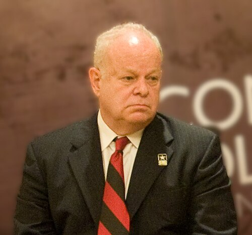
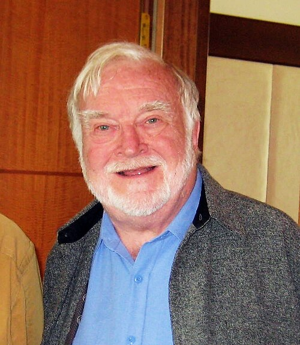
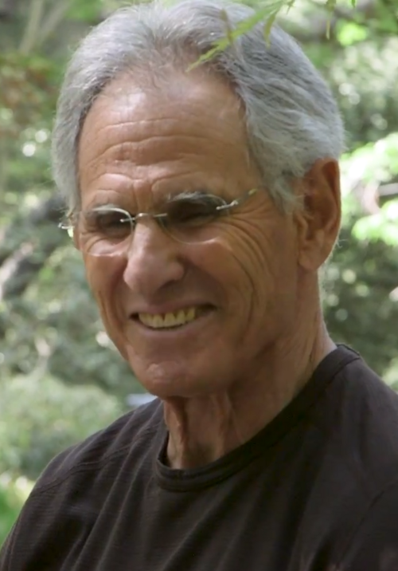
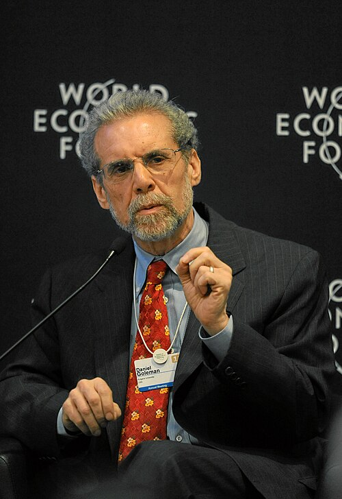
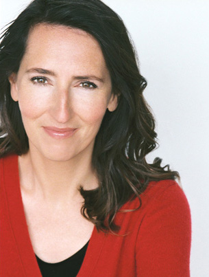

1967 到 2025。这两个领域的历史不是一条上升曲线，而是一段「立志 → 繁荣 → 清算 → 重建」的循环。 有意思的是，每一次清算的执行者，几乎都来自领域内部。
冥想科学和积极心理学常被并称，但它们的源头完全不同。
冥想这条线来自临床。1979 年，一位刚在 MIT 拿到分子生物学博士学位不久的年轻人 ——Jon Kabat-Zinn，他的导师是诺贝尔奖得主 Salvador Luria——在马萨诸塞大学医学院开了一间减压门诊。 他做的事情在当时相当激进：把禅修从宗教语境里剥出来，做成一套八周、有固定课时、有家庭作业、 可以写进医嘱的标准方案。这一步决定了此后四十年冥想研究的全部形态——因为一旦它变成「疗法」， 它就必须接受疗法的检验标准。
积极心理学这条线来自反思。1998 年，Martin Seligman 当选美国心理学会主席， 在年会主席演说中提出：心理学在二战后过度偏向「治病」， 忘记了它本该有的另一半使命——研究是什么让人活得充实。两年后他与 Csikszentmihalyi 在 《American Psychologist》合编专刊，学科正式命名。
两条线在 2000 年代交汇：冥想开始被当作提升幸福的手段来研究，积极心理学则把正念收编为它的干预工具之一。 交汇带来了繁荣，也带来了共同的病症——当一个领域同时承受学术期待和市场期待时， 它对阳性结果的胃口会大到失去判断力。
蔷薇色节点是领域的高光时刻，琥珀色节点是三次方法学断裂。
Seligman 与 Steven Maier 在宾夕法尼亚大学做出「无法逃避的电击」实验，论文发表于《Journal of Experimental Psychology》74 卷 1–9 页。这项研究让他成名，也埋下三十年后的转向：如果无助是习得的，那么它的反面是不是也能学？
Kabat-Zinn 在 MIT 获分子生物学博士学位，导师为诺奖得主 Salvador Luria。他在校期间由禅师 Philip Kapleau 的一场演讲引入禅修，后师从韩国曹溪宗的崇山行愿禅师。
Csikszentmihalyi 发表《Play and Intrinsic Rewards》（《Journal of Humanistic Psychology》15 卷 3 期 41–63 页），首次系统提出 flow，材料来自攀岩者、棋手、作曲家。同年 Herbert Benson 出版《The Relaxation Response》，把打坐的生理效应带进主流医学视野。
Csikszentmihalyi 与 Larson、Prescott 发表 ESM 原始论文（《Journal of Youth and Adolescence》6 卷 3 期 281–294 页）：用传呼机随机提示受试者报告此刻在做什么、感觉如何。心流理论最持久的遗产可能不是概念本身，而是这个方法——四十四年后，Killingsworth 正是用它的手机版本推翻了收入与幸福的经典结论。
Kabat-Zinn 在马萨诸塞大学医学院（伍斯特）创立 Stress Reduction Clinic，八周 MBSR 课程成型。同一年，一篇讨论前额叶脑电不对称与情绪的短文发表在《Psychophysiology》16 卷 202–203 页，作者是 Davidson、Schwartz、Saron、Bennett 与 Goleman——两人 1972 年在哈佛相识，三十八年后合写了《Altered Traits》。
Csikszentmihalyi《Flow: The Psychology of Optimal Experience》与 Kabat-Zinn《Full Catastrophe Living》。前者让心流进入大众语汇，后者成为 MBSR 的教科书。
由 Adam Engle、神经科学家 Francisco Varela 与达赖喇嘛共同发起，Davidson 自创立起即参与。这个机构此后成为佛教修行传统与认知神经科学之间最主要的接口。
Seligman 在 APA 年会发表主席演说，正式把「研究是什么让人活得好」立为学科议程。（这里有一个流传极广的引用错误，正好可以当本站的第一道练习题：演说的期刊正式发表标题是《The President's Address》，刊于《American Psychologist》1999 年 54 卷 559–562 页；而常被当作演说标题引用的《Building Human Strength: Psychology's Forgotten Mission》，其实是同年 1 月 APA Monitor 上的一篇专栏短文——两篇文体、载体都不同，被大量二手资料混为一谈。）
Seligman 与 Csikszentmihalyi 合编《American Psychologist》专刊，开篇文章《Positive psychology: An introduction》（55 卷 1 期 5–14 页）。积极心理学正式成为一个学科名称。
2003 年 Seligman 在宾夕法尼亚大学创立 MAPP（应用积极心理学硕士），全球首个专门学位项目。2004 年 Peterson 与 Seligman 出版《Character Strengths and Virtues》，由 55 位学者协作，提出 6 大美德、24 项性格优势的分类体系——一部刻意对标《DSM》的「反诊断手册」。
Lutz 等人在《PNAS》报告长期修行者在冥想时出现高振幅伽马波同步。这项研究影响巨大，但样本是 8 名修行者对 10 名学生，且为横断面比较而非随机分组——参与者是自我选择的。它适合作为假说的起点，不适合作为结论的终点。
Fredrickson 与 Losada 在《American Psychologist》60 卷 7 期 678–686 页提出「正负情绪比」，借非线性动力学主张存在 2.9013 到 11.6346 的临界区间。同年 Lyubomirsky、Sheldon 与 Schkade 发表可持续幸福模型（《Review of General Psychology》9 卷 2 期 111–131 页），后被通俗化为「50% 遗传 / 10% 环境 / 40% 可控」的饼图。同年 Seligman 等人发表网络随机试验（N=577），报告「三件好事」与「运用签名优势」两项练习效果可持续六个月。
Lutz、Slagter、Dunne 与 Davidson 在《Trends in Cognitive Sciences》12 卷 4 期 163–169 页区分了聚焦注意（focused attention）与开放监控（open monitoring）两类。（常见的「聚焦注意 / 开放监控 / 慈心」三分法是后续文献的通俗整理，并非这篇论文的原始框架。）
Kahneman 与 Deaton 报告收入对情绪幸福感的影响在约 7.5 万美元后趋平；Brewer 等人报告资深冥想者的默认模式网络活动降低（总样本约 24 人，作者自陈样本偏小）；Hölzel 等人报告八周 MBSR 后左侧海马灰质浓度增加（MBSR 组 16 人、对照组 17 人）。这三张图此后被引用了成千上万次。
Brown、Sokal 与 Friedman 在《American Psychologist》68 卷 9 期 801–813 页发表《The Complex Dynamics of Wishful Thinking》，指出 Losada 对洛伦兹方程的套用在数学上根本不成立。同年 9 月，期刊对 2005 年原文作出部分撤回，撤下其中的数学建模部分与那两个精确到小数点后四位的临界值。
Goyal 等人在《JAMA Internal Medicine》发表元分析，纳入 47 项 RCT、3,515 名受试者，且只采信设有主动对照组的研究。结论：对焦虑、抑郁、疼痛，正念冥想有中等强度证据，效应量约 0.3；但没有证据表明它优于任何一种具体的其他疗法。
Kuyken 等人在《JAMA Psychiatry》发表个体患者数据元分析（9 项试验、1,248 人）：MBCT 相对全部对照组降低抑郁复发风险，风险比 0.69（95% CI 0.58–0.82）；相对维持性抗抑郁药，风险比 0.77（95% CI 0.60–0.98）。这是这两个领域里最经得起推敲的成果。
Lindahl 等人在《PLOS ONE》发表《The Varieties of Contemplative Experience》，系统记录冥想练习中出现的困难体验。同年 Goleman 与 Davidson 出版《Altered Traits》，公开承认包括他们自己早年工作在内的大量冥想研究达不到证据标准。
Van Dam 等十五位研究者在《Perspectives on Psychological Science》13 卷 1 期 36–61 页联署发表《Mind the Hype》，系统批评正念研究的定义混乱、对照缺失、发表偏倚与媒体夸大，并开出一份方法学处方。这份清单事实上成了本站「证据之筛」的原型。
White、Uttl 与 Holder 在《PLOS ONE》用小样本偏倚校正方法重算了积极心理干预的两大元分析。Sin 与 Lyubomirsky (2009) 报告的幸福感效应从 r=0.29 降到 0.08（95% CI 0.00–0.15），抑郁效应从 r=0.31 降到 0.04 且不再显著。此前的「中等效应」，大部分是发表偏倚制造的幻影。
Killingsworth 用经验取样法（33,391 名在职成年人、173 万条实时报告）发现幸福感随收入对数持续上升，未见 7.5 万美元的平台。同期，Sheldon 与 Lyubomirsky 主动撰文重审那个 50/10/40 饼图（《The Journal of Positive Psychology》16 卷 2 期，2019 年网络首发、2021 年正式成卷），承认批评有道理、当初的数字是推测性的，不该被当作精确值使用。
Kral 等人在《Science Advances》发表《Absence of structural brain changes from mindfulness-based stress reduction》：合并两项三臂随机对照试验，218 名冥想初学者分入等待名单（70 人）、MBSR（75 人）与匹配的主动对照组（73 人），用更现代的影像处理流程做结构 MRI。结果是——在全脑范围和此前报告过的每一个感兴趣区（海马、后扣带回、颞顶联合区、小脑、脑干），都没有发现 MBSR 相关的结构变化。
Killingsworth、Kahneman 与 Mellers 一起重新分析数据，调和了此前的分歧：对大多数人，幸福感随收入持续上升；平台效应只在最不快乐的那部分人群中真实存在，且拐点约在 10 万美元。两个立场相反的研究者联手去找自己错在哪——这是本站最推崇的一种科学礼仪。
Van Dam、Targett、Davies、Burger 与 Galante 在《Clinical Psychological Science》发表针对美国冥想者代表性样本（约 886 人）的调查：58.4% 在冥想体验量表上报告过至少一种不寻常或不良体验，78.3% 在冥想相关不良效应量表上至少勾选了一项，9.1% 报告因此出现功能损害。早期研究给出的数字仅约 1%。这个跳跃反映的是测量方式的进步，不是冥想突然变危险了——它此前根本没被认真测过。

从习得性无助的发现者，转身成为积极心理学的发起人。他身上最值得学的一点是肯推翻自己—— 2011 年的《Flourish》直接替换了他 2002 年自己搭的三元框架。 最值得警惕的一点是：他为一个尚缺乏随机对照证据的框架做了过多的制度推广。

生于阜姆（今克罗地亚里耶卡），少年时经历家族在战争与流亡中的破碎，二十二岁移民美国。 「什么让生活值得过」对他不是学术问题。他留下的不只是心流概念， 还有一件更硬的东西：一套测量当下体验的方法。

MIT 分子生物学博士，师从诺奖得主 Luria。他把禅修翻译成医学语言， 代价是这套练习从此要按医学标准被审判——四十六年后关于不良反应的那份调查， 正是这一步的延迟账单。
威斯康星大学 Center for Healthy Minds 创办者，自 1991 年起参与 Mind and Life Institute。 他的工作贯穿了这个领域从开创到自我清算的全过程，而《Altered Traits》里 被降级的研究中有相当一部分出自他自己的实验室。

《情商》的作者，此前是《纽约时报》资深科学记者。1972 年在哈佛与 Davidson 相识， 1979 年就是那篇前额叶不对称论文的合著者之一。他后来把记者的怀疑本能带回了这个领域。

可持续幸福模型的提出者之一，那个流传最广的 50/10/40 饼图源自她 2005 年的论文。 她在这座站里之所以重要，不是因为那个模型， 而是因为2021 年她和 Sheldon 一起写文章检讨了这个模型。
把三次断裂并排看，会发现同一个结构：
正负情绪比、海马灰质、40% 可控、7.5 万美元阈值——四个案例，四个相同的剧本。 这不是因为研究者不诚实，而是因为整个激励结构在奖励阳性结果： 期刊偏爱它，媒体放大它，畅销书需要它，读者也想听到它。
所以这座站真正想教你的，不是记住哪条结论是对的——结论还会变。 而是记住那把筛子的四道网： 有主动对照吗？样本够大吗？预注册了吗？被独立复制了吗？ 有了它，下一个还没出现的口号，你也能自己称一称。